[SH4] Proving Henry's Innocence
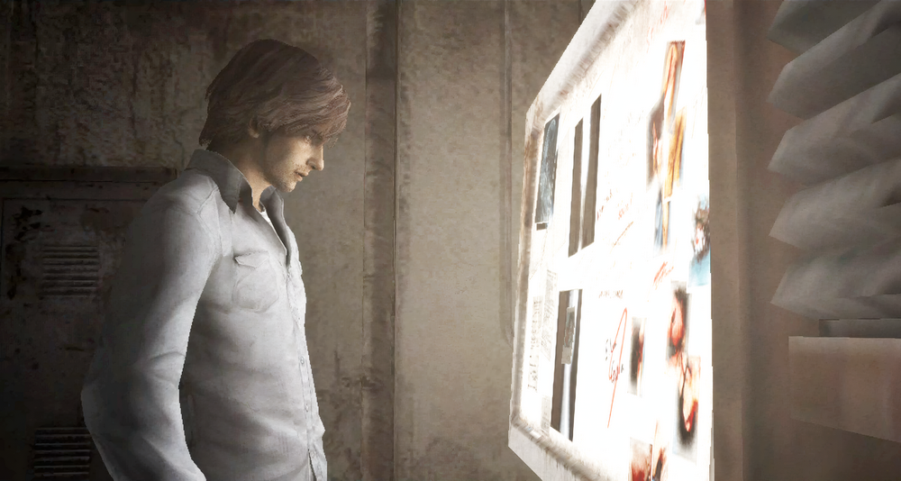
Proving Henry's Innocence Against Questionable Interests (lol)
This is a mirror of the DeviantArt version linked above, provided as a backup and for easier access.

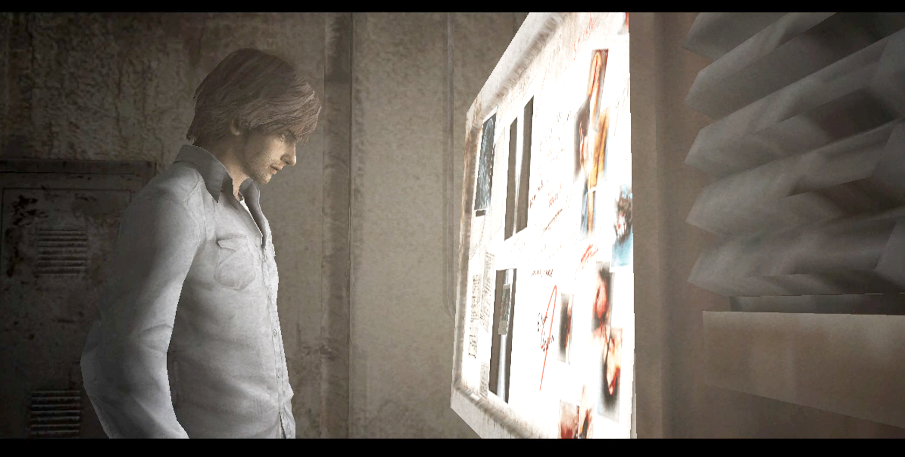
This is a scene from Silent Hill 4's the Hospital World.
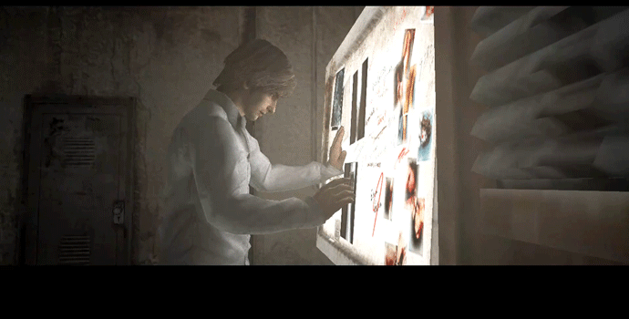
There's a cutscene where Henry's alone at the hospital, trying to look cool while staring at a photo of a beaten-up Eileen. But in the final shot, there's no photo in his hand. It's just gone!
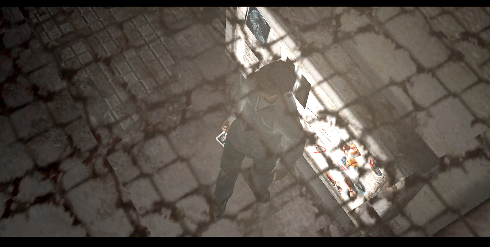
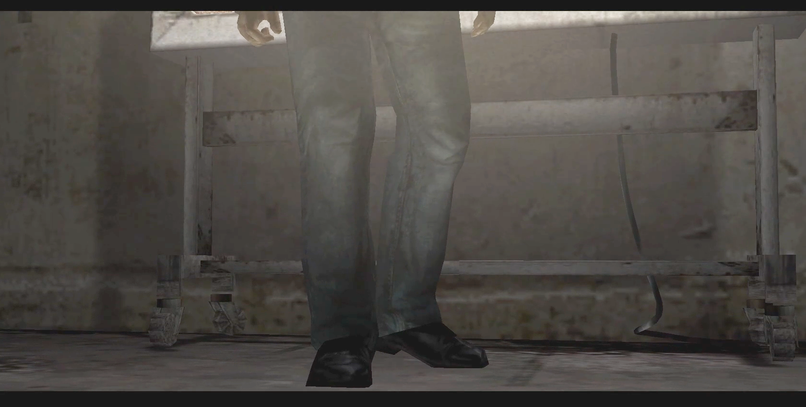
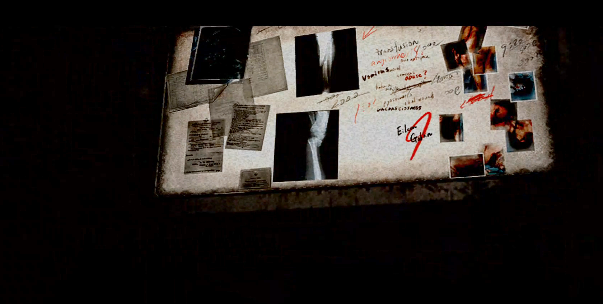
That's why everyone suspected him of pocketing that messed up photo! Haha.
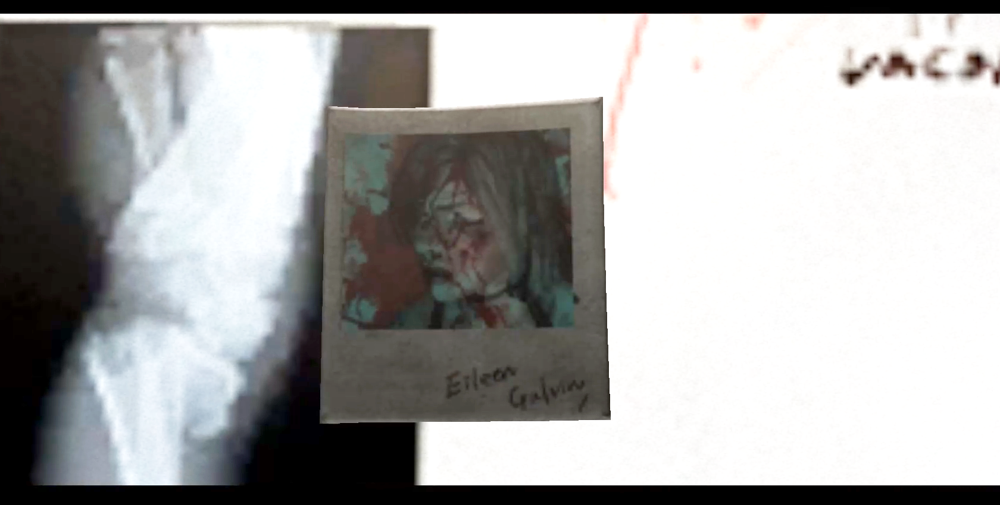
But right after the cutscene, if you look near his feet..., there's something on the ground!
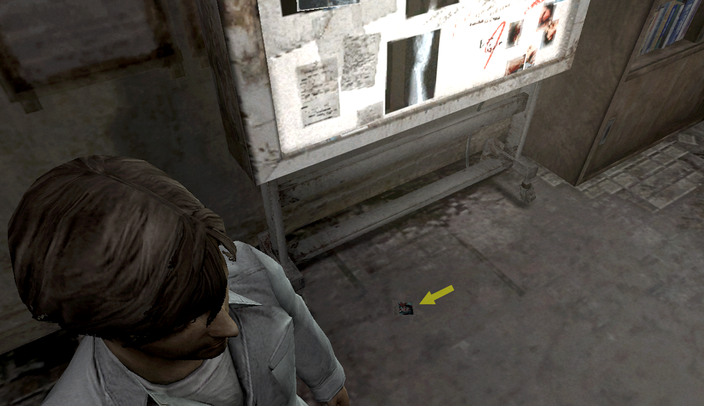
Zoom in, and it's the photo!
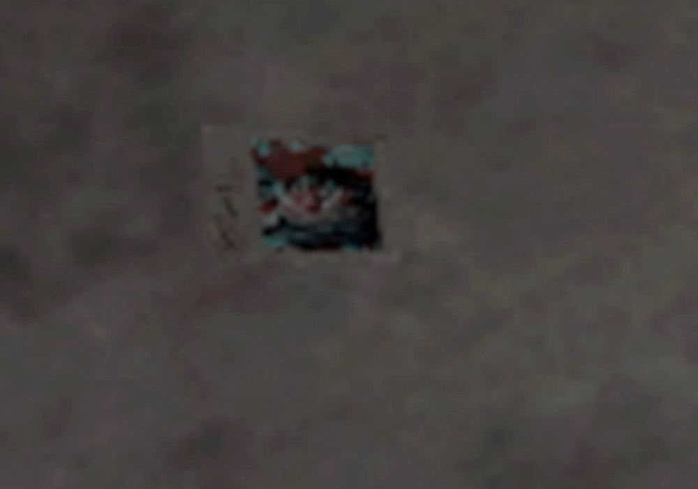
He really was a peeper toward his neighbor, lol, but turns out he wasn't a photo-thieving creep. Phew! What incredible detail. But don't just throw it on the floor!
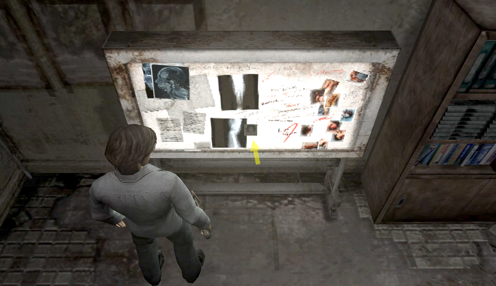
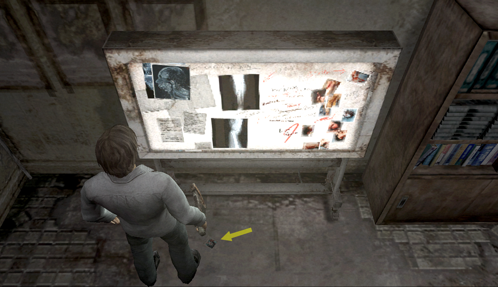
Before the cutscene / After the cutscene
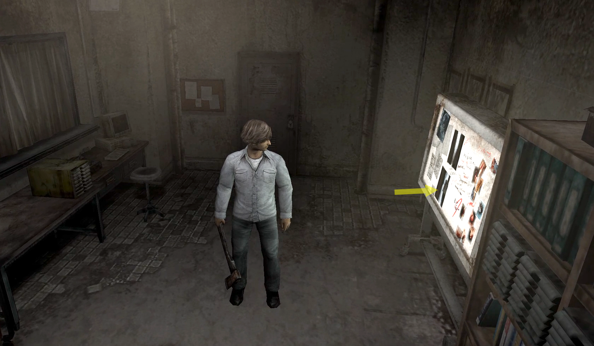
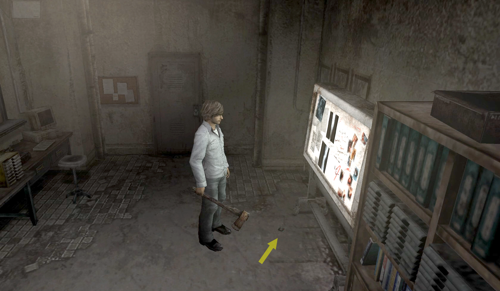
When I first discovered this, my honest reaction was, "Whoa... Whoever made this are total masterminds."
This was from an era when motion adjustments were still done by hand, so changing the position of the photo in-game before and after this cutscene must have been work. So, it would've been funny even if the photo stayed gone after the cutscene and the suspicion that Henry stole it remained lol, but they went out of their way to place it on the floor. The attention to detail is amazing!
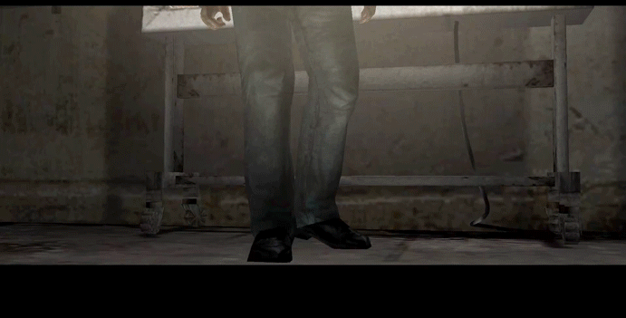
Most people probably never notice it, though... I really love that they went this far for such a small group of hardcore fans, people like us who actually step through scenes frame by frame. Even now, every time I see this scene, I still think, "Yeah, the people who made this total masterminds!"